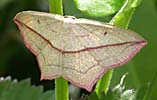

|  |  |
|
What to look for in June
June and July are traditionally very quiet months for birds. However, June is probably the best month for watching Great Crested Grebe chicks and expect to see the young of Coot and Moorhen as well.
The 2 of the 4 records of Spoonbill were in June, so don't write the month off for rarities.
Osprey has also been recorded twice in June.
Common Terns are a possibility, though numbers peak a little later in the summer and the first ever Little Tern was seen in June.
Cuckoos might still be heard in the surrounding countryside after their peak month of May.
Spotted Flycatchers are quite likely in the woods and Reed Warblers in the reed beds. A number of other warblers are possible, although some have not been seen in the last few years such as Whitethroat and Lesser Whitethroat.
The meadow flowers are always good in June and the moths and butterflies can be splendid on warm days.


